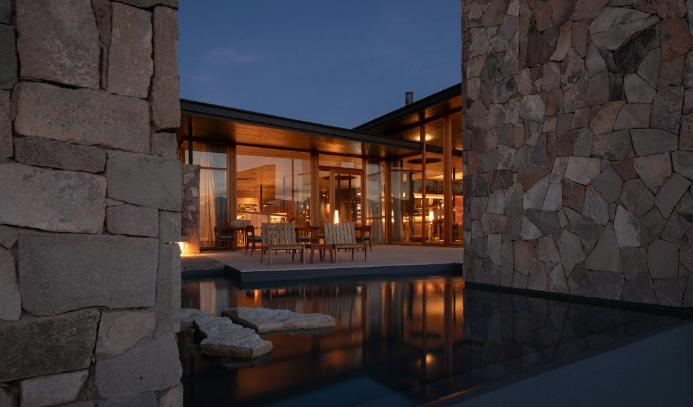

Come Forma & Materia sta rivoluzionando il rendering architettonico: risparmi, velocità e innovazione tecnologica per studi di progettazione

Rendering Architettonico: L’evoluzione indispensabile per Architetti, Interior Designer, Geometri, Ingegneri Edili e Studi di Progettazione
- I costi e i tempi di realizzazione dei render tradizionali stanno rallentando l’efficienza operativa degli studi di progettazione.
- L’impossibilità di mostrare modifiche al cliente in tempo reale influisce sulla soddisfazione e chiusura dei progetti.
- Forma & Materia, con il suo motore neurale di rendering 4K, offre una soluzione rapida, economica e intelligente per trasformare schizzi e CAD in immagini fotorealistiche in 20 secondi.
Analisi Approfondita della Notizia e delle Implicazioni Operative
Negli ultimi mesi il settore dell’architettura e del design ha vissuto una svolta tecnologica che sta ridefinendo le metodologie di presentazione e sviluppo di progetti. L’aumento della domanda di visualizzazioni fotorealistiche ad alta qualità, unitamente alla necessità di rapidità nel rispondere a clienti sempre più esigenti, ha evidenziato limiti strutturali nel processo tradizionale di rendering. Gli studi di progettazione, tra cui architetti, interior designer, geometri e ingegneri edili, si trovano a dover gestire costi elevati e lunghe tempistiche che incidono negativamente sui margini e sulla competitività.
La notizia conferma questo trend: con tariffe medie di 500 euro per ogni tavola di rendering affidata a terzi e attese di circa cinque giorni per ogni variante, la produttività viene frenata. Questo scenario evidenzia una necessità impellente di un cambio di paradigma che metta al centro la velocità, la flessibilità e l’ottimizzazione delle risorse.
Le Conseguenze e i Costi di Non Agire
Il mantenimento dello status quo comporta effetti diretti e tangibili in termini operativi e commerciali. Il costo esorbitante per l’acquisizione di render esterni, pari a 500 euro per tavola, si traduce in un investimento oneroso per ogni progetto, limitando il numero di varianti da presentare ed esplorare. La rigidità nei tempi di attesa, fino a cinque giorni per ogni modifica, rallenta l’interazione con il cliente e il processo decisionale, con il rischio di perdere commesse e di allungare i cicli di vendita.
Non meno rilevante è la mancanza di un sistema che consenta modifiche dal vivo, ovvero la possibilità di mostrare in tempo reale al cliente le variazioni progettuali. Questo gap incide gravemente sulla qualità del servizio e sulla capacità di fidelizzazione. La differenza tra un’esperienza immersiva, rapida e interattiva e una comunicazione statica e lenta può pesare in modo significativo sulla reputazione dello studio e sulla soddisfazione finale del cliente.
Per studi già gravati da margini ridotti e pressione competitiva elevata, ignorare queste criticità significa compromettere il futuro. La trasformazione digitale nel rendering non è più un’opzione ma un imperativo strategico.
Come Forma & Materia Risolve il Problema
La piattaforma SaaS Forma & Materia di RM Studio propone una risposta tecnologica avanzata e pragmatica a questa sfida. Grazie al suo motore neurale 4K, è in grado di trasformare schizzi a mano libera, piante e disegni CAD in render fotorealistici in appena 20 secondi. L’innovazione risiede non solo nella velocità, ma nella capacità di preservare in modo assoluto la geometria originale, interpretando anche note, frecce e annotazioni scritte a penna direttamente sui fogli di lavoro.
Questa tecnologia consente agli studi di progettazione di gestire internamente la creazione di immagini di alta qualità, abbattendo sensibilmente i costi e accelerando i tempi. Inoltre, la piattaforma permette di mostrare varianti e modifiche al cliente in tempo reale, migliorando l’interazione, riducendo le revisioni e aumentando le probabilità di chiusura positiva del progetto.
Forma & Materia si presenta dunque come uno strumento indispensabile per professionisti che vogliono ottimizzare processi, aumentare la produttività e fornire un servizio superiore basato su innovazione e rapidità.
| Gestione Tradizionale | Con Forma & Materia |
|---|---|
| Costi medi di 500€ per tavola di rendering esterna | Progetto singolo da €99 o Atelier Pro da €249 con fino a 20 render 4K |
| Tempi di attesa di 5 giorni per ogni variante | Render pronti in soli 20 secondi grazie al motore neurale |
| Nessuna possibilità di modifiche dal vivo con il cliente | Interfaccia interattiva per modifiche immediate e revisione in tempo reale |
| Dipendenza da terzi e processi manuali lenti | Autonomia totale e workflow digitale integrato dalla bozza al render |
💡 Ti è stato utile questo approfondimento?
Condividilo con un collega o un amico del settore Architetti, Interior Designer, Geometri, Ingegneri Edili e Studi di Progettazione a cui potrebbe interessare!
FAQ: Domande Frequenti su Forma & Materia per studi di progettazione
1. Quanto è facile integrare Forma & Materia nel flusso di lavoro esistente?
Forma & Materia è progettato per essere immediatamente utilizzabile senza necessità di competenze avanzate. L’interfaccia semplice e il motore neurale consentono di importare schizzi, CAD o piante e ottenere render 4K in pochi clic, integrandosi con i software di progettazione tradizionali.
2. Qual è la qualità dei render prodotti rispetto a quelli realizzati da renderisti esterni?
Grazie al motore neurale all’avanguardia, i render sono fotorealistici e di qualità elevata, migliorando la presentazione al cliente e mantenendo l’esattezza geometrica e la fedeltà delle annotazioni manuali, difficili da raggiungere con metodi tradizionali.
3. Forma & Materia supporta varianti e modifiche in tempo reale durante le presentazioni?
Sì, la piattaforma permette di trasformare rapidamente modifiche e note direttamente dal disegno a mano libera in render modificati, facilitando la comunicazione dinamica e l’approvazione immediata da parte del cliente.
Inizia Subito
Progetto Singolo da €99 (6 render) o Atelier Pro a €249 (20 render 4K). 1 Render di prova gratuito su https://formamateria.rmstudio.app/studio
Fonti Ufficiali e Risorse Esterne
Scopri l'Intelligenza Artificiale per la tua attività
Ottimizza i processi e aumenta le vendite con le soluzioni B2B di RM Studio.
Scopri Forma & Materia